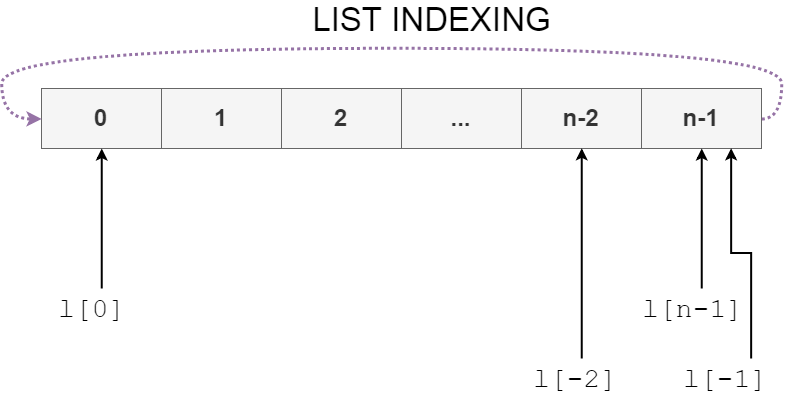

Python Training
Najeem Muhammed | Vinay Keerthi | Akshay Aithal
This training material is hosted at github for your easy access. You can print the document in an easy to read format, albeit without the playable asciinema code segments by going here and printing using your browser's dialog. Use chrome if you'd like to export to PDF.
Useful Links:
Python Official Site |
Python Documentation
Anaconda Python Distribution |
Automate the Boring Stuff
Training Overview
- Day 1: Introduction to Python
- Day 2: Functions and Modules
- Day 3: Essential Built-In Libraries
- Day 4: Essential Third-Party Libraries
- Day 5: Department Specific Tracks
- ME Track
- CAE Track
- End Note: The Joy of Automation (No laptop required)
Day 1
Hello, Python!
Introduction: What is Python?
- A General Purpose Language
- Readable syntax
- Interpreted language (conditions apply)
- Object Oriented
- Powerful and extensible.
- A huge inventory of community-driven libraries
- User-friendly for people who have never programmed before
- Replacement for Matlab
Installation Instructions
You can download Anaconda off the link provided in the first page of this training website. Anaconda is a Python distribution that includes a lot of the packages we will use over the course of this training.
Launching the Python Interpreter
The Python interpreter is an interactive python console. You can type anything there and get instant feedback. It is easy to use the interpreter to prototype code snippets, to try out new algorithms, and to figure out what's wrong with your code. Think of it as a calculator. Here is the official documentation on all the operators you can use.
Hello, World!
Open a text editor of your choice, any text editor, and type this:
print("Hello, World!")
Save this in a file called "hello.py" in a folder of your choice. Open a command line, Windows Powershell,
GNU/Linux Terminal or a terminal emulator of your choice, and navigate to the folder using the cd command.
Once there, type python hello.py and hit enter.
Data Types: Numbers
Data Types: Strings and Characters
Strings and characters are essentially objects called lists in python. Before you understand how you can really use strings, you should take some time to understand lists.
Data Types: Lists
Notes on List Indexing
Lists are zero indexed in Python. The first item has an address of zero. When accessing more than one list item using l[m:n], you are actually using the concept of Intervals in Mathematics. When you type l[m:n] you are asking for a half-open interval of the list. i.e., you are asking for item at position m, and all following items until the item at position n.
When you ask for l[-1], the list is giving you one item behind the item at position 0.
Data Types: String Manipulation
Day 1 Recap
- Python is a general purpose programming language. It's like a swiss-knife, which comes with many attachments!
- Use Anaconda Python when you are a beginning. It comes with all those attachments.
- Python is cAsE SeNsiTive! print is not equal to Print or to PRINT.
- The python interpreter will always display the output of a current statement.
- To see output in a script file, use the print function.
- There are some nice built-in functions: type, help, dir, print, set, int, float and str among others.
- Lists are like slotted buckets into which you can put anything, even other lists.
- If you're using notepad to save Python files, make sure you select All Files before saving as a .py file. Windows will save it as a *.py.txt file. This is why you should never use notepad to write code.
Day 1 Exercises
- Try printing your name 42 times in the Python interpreter. How would you do it if you had to print all of them in the same line?
- Try taking the phrase "A small dusty man in a small dusty room" and print out how many times the word "small" appears in it? The answer is easy now, but what if the line were much, much longer?
- Go to Google and try to find how to read a text file in Python.
- BONUS: Can you see if you can write to a text file also?
Day 2
More Basics
Data Types: Dictionaries
Conditionals & Control Structures
When using conditional structures, you begin noticing the white spaces before some lines. This is called a block. Python uses whitespaces to denote when a block begins or ends. Always use 4 spaces, and never a "tab" to indent your code. With a good editor, you can set it to change tabs to 4 white spaces.
More Conditionals & Control Structures
File Operations
Functions
Day 2 Ends
Exercises
- Download the entire text of Charles Dickens - Oliver Twist and count how many times the phrase `Artful Dodger` appears in it.
- How can you get a list of words in the book? Can you print them all out?
- Now, make a dictionary with all the words in the book. Can you add the word count for each word in the values?
- Write the last one as a function to take a string and return a dictionary that does exactly this.
Day 3
Modules
Day 4
Useful external modules
Day 5
Running python in NX
Resources
- Cheatsheet 1
- Cheatsheet 2
- Cheatsheet 3
- Automate the Boring Stuff (Recommended reading)
- Python 3 Official Tutorial
End Note
"The Joy of Automation"
This is a general talk anyone can attend. It is a talk about how you get started programming, and how to continue to learn by doing things.
Sokrates [Socrates] : You have not observed with attention the images [automata] of Daidalos [Daedalus]. But perhaps there are none in your country.
Meno : What is the point of your remark?
Sokrates : That if they are not fastened up they play truant and run away; but, if fastened, they stay where they are . . . To possess one of his works which is let loose does not count for much in value; it will not stay with you any more than a runaway slave: but when fastened up it is worth a great deal, for his productions are very fine things.
Why Automation?
No one should have to do repetitive tasks.
We could make mistakes when we do the same thing over and over again.
More importantly, we get bored.
We are smarter than machines, so naturally, we should make them do things we don't want to.
What can we automate? Where can we automate?
Anything you are bored with.
Anywhere you want to.
What is the Internet of Things?
We're always in a network .
Mobile phones communicate with one another.
Computers talk to one another.
Everything is connected.
The Internet of Things is not the World Wide Web
Everything does not need to be connected. to the World Wide Web.
Connecting Devices: RESTFul APIs or MQTT
What happens when a device "calls" another device?
What happens when a device "is called" by another device?
Advice
Start small.
Do One Thing. Do that well.
Do not generalize until you understand the process well.
But I Don't Know How to Code!
You can already do a lot without knowing how to code. All it takes is some effort, and the right tools. You have tools like Apachi NiFi, NodeRED, Tasker or IFTTT to help you automate things without coding. You can get a LOT done without coding.
But I Know How to Code!
If you know how to code, at least a little, you can do a LOT with IoT. You can write small plugins for the tools mentioned previously, or you can go ahead and write gigantic libraries to help those who cannot code.
Interesting Projects
Interesting Projects
Smart CNC Machine
Interesting Projects
Remote Control a 3D Printer
Interesting Projects
Gather Data On Your Car
Interesting Projects
Catch a Rat
Interesting Projects
Play Chess With Anyone Around the World
Interesting Projects
Water Your Garden Automatically
Interesting Projects
Feed your dog when you're away
Interesting Projects
Make Craft Beer
Interesting Projects
Find a Book When You Want One
Interesting Projects
Other Projects
Where Do I Go From Here?
Scratch : Visual Programming for Kids | Node-RED Visual Programming | Apache NiFi Visual Programming | IF This Then That: IFTTT: Automation Interface | Tasker: Automation for Android | Raspberry Pi | PiBakery : Set up your Raspberry Pi | MagPi Issue 70: Home Automation with the Raspberry Pi | Automate the Boring Stuff | NodeMCU : ESP8266 Development Board | MicroPython